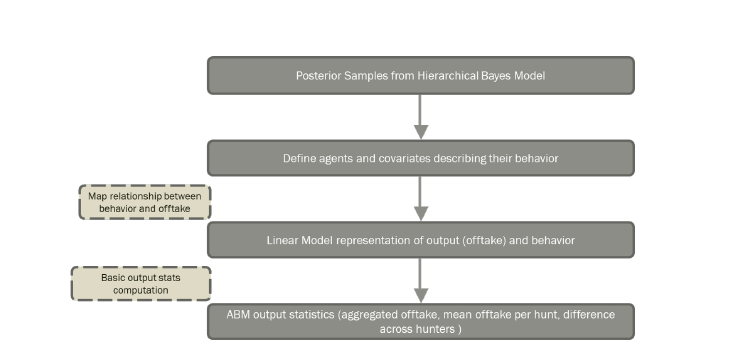
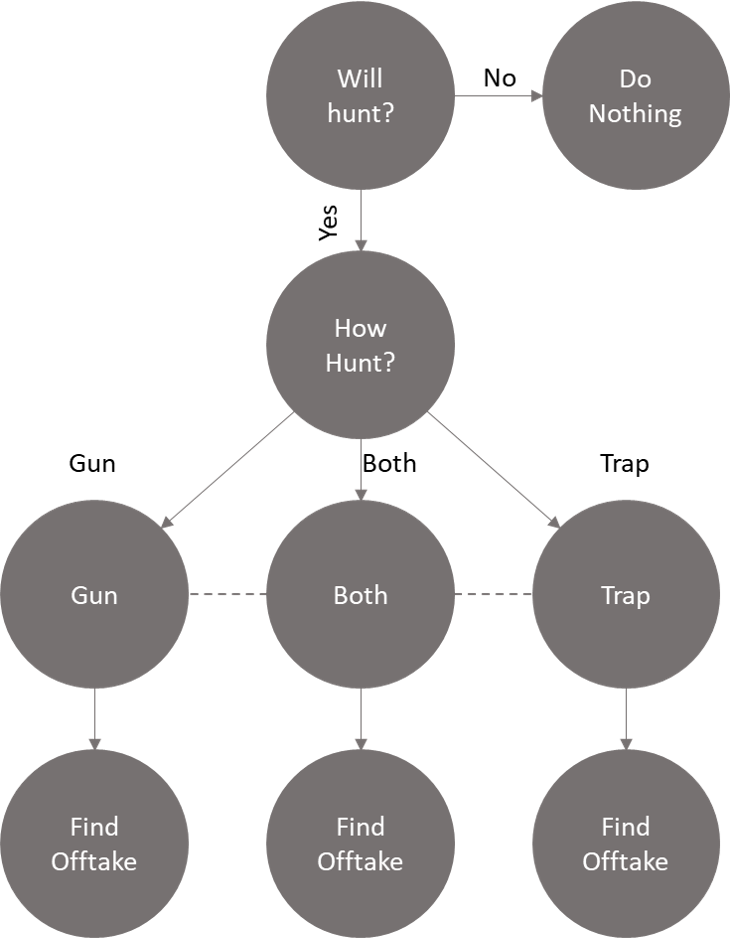

Participatory Agent-Based Bayesian Modeling for Community Bushmeat Hunting Adaptive Management
Skills Employed
- Modelling Techniques: Bayesian Hierarchical Modelling, Agent-based modelling
- Other Statistical Techniques: Missing Data Imputation, Distance Matrix Computation
- Tech Stack: R, MS Excel, Python
- Libraries: brms, shiny (RShiny), MESA
Introduction
In this project, we want to create an analytical framework that enables Gabonese villages to make more sustainable hunting decisions by predicting the consequences of their management decisions and adapting accordingly. To facilitate data informed community decision-making for Gabonese villages and increase the sustainability of their hunting, we aim to combine Agent Based and Bayesian hierarchical modeling to analyze and understand current hunting methods and simulate outcomes of hunting management policies based on an individual's behavior.
Data
The data has been generated by the hunters. They record their responses on the hunt after every hunt and use handheld devices to record their hunting paths (GPS coordinates). Moreover, the results from their hunts like animals hunted are also recorded in this dataset. These details can be identified for each hunt that has been assigned a hunt ID. These hunters are spread across a few villages in Gabon and no hunter hunts across villages. We are working with data on 9 Gabonese project villages for this project.
Methodology

In this project, we are using a combination of hierarchical Bayesian modelling and Agent-based modelling (as shown above) to simulate and predict the
outcomes of hunting behavior.
A basic overview of the models have been described below.
Hierarchical Bayesian Model
Hierarchical Bayes modelling is a popularly used tool in ecological studies. It enables us to break the entire problem at different levels. In this project, we create Bayesian Models separately for gun hunts and trap hunts. We study and evaluate the effects of all behavior parameters across villages, areas and hunters. The objective of the Bayesian modeling exercise is to understand and model the relationship between the changes in outcome i.e. offtake with respect to the hunters behaviour. Offtake accounts for the total number of animals killed in a hunt, as well as the species killed, and biomass harvested. The advantage of using a hierarchical model here is the exibility in modeling the different levels in a data set. In addition, hierarchical models have the benefit when certain groups in the data have few observations by borrowing information from the aggregate values, which is referred to as shrinkage. We iteratively create and test Bayesian Hierarchical Models where we can study and observe the random and fixed effects of all behavior parameters across groups like villages, individuals like hunts or local areas. Using our preliminary model, we have obtained an understanding of the effects of some covariates. We will now iterate and evaluate various models to obtain the posterior distributions of the output offtake with respect to the behavior parameters.
Agent Based Model
The purpose of using ABMs is to gain inference into the collective behaviour of the agents by creating a simulation where the agents interact with their environment. In this project, the benefit of using ABMs rather than traditional machine learning techniques to predict offtake is that we are able to map a particular hunter to an agent. The behavior parameters of these hunters, for instance the ammunition brought, traps laid etc. help us define these mappings and simulate outcomes (offtake) as a result of these behavior parameters. This allows hunters and villages to easily see their individual impact, rather than using a black box method where such insight may be lost. Generally speaking, the agents in an ABM are driven by conditional statements where a probability is sampled from a distribution and given to an agent. If the probability assigned meets a certain threshold, the agent takes a specific action. This is an iterative process that continues till the agent has completed his actions. A skeletal framework of the ABM we built for this project is given above.
Results
This is an ongoing project. The results will be updated once the project is completed. (Expected May 2021)
Impact
This project was executed as our final capstone project as a part of the MIDS curriculum at Duke University. The results will be consumed by the Gabonese policy-makers and researchers to design optimized hunting policies.
References
The following papers and literature (not limited to) were referred to, for execution and solution approach design.
- Voinov A et al. 2018. Tools and methods in participatory modeling: Selecting the right tool for the job.Environmental Modelling and Software 109:232{255.
- Sandker M, Campbell BM, Ruiz-Perez M, Sayer JA, Cowling R, Kassa H, Knight AT. 2010. The Role of Participatory Modeling in Landscape Approaches to Reconcile Conservation and Development. Ecology and Society 15.